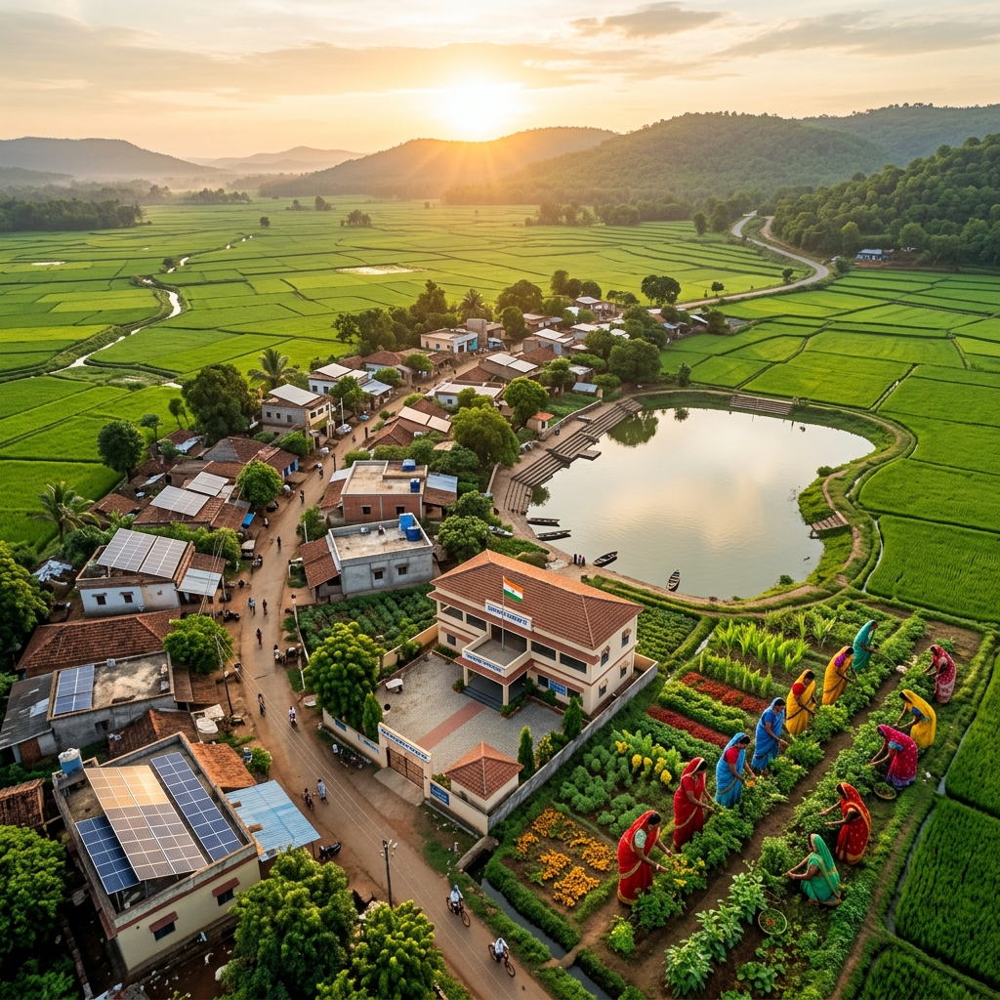

Loading Grameen Vikas AI...

From farm to future — explore agriculture, government schemes, women empowerment, water conservation, and sustainable village planning all in one place.
A comprehensive digital platform dedicated to accelerating rural development across India
Click any pillar to explore in depth
Organic farming, crop selection, smart irrigation, soil health, and modern farming techniques.
Self Help Groups, microfinance, women entrepreneurship, skill development and leadership.
Rainwater harvesting, check dams, farm ponds, drip irrigation and groundwater recharge.
Solar power, biogas plants, wind energy and sustainable energy solutions for villages.
Ayushman Bharat, ASHA workers, primary health centers, nutrition and sanitation.
Digital literacy, e-governance, Common Service Centres, online scheme applications.
Scholarships, mid-day meals, digital classrooms, vocational training and Skill India.
Find the right scheme for you — filter by category
₹6,000/year income support to all landholding farmer families in 3 equal installments.
100 days of guaranteed wage employment per year to rural households.
Financial assistance to rural BPL families for construction of pucca houses.
Crop insurance at minimal premium to protect farmers from natural calamities and crop losses.
National Rural Livelihoods Mission to form SHGs and provide credit for micro-enterprises.
Solar pumps and grid-connected solar power plants for farmers to reduce electricity bills.
₹5 lakh annual health cover for secondary and tertiary hospitalisation to poor families.
Affordable short-term credit for farmers to meet agricultural needs at low interest rates.
Key development indicators across rural India
A complete, ready-to-implement micro-enterprise project for rural women
| Project Name | SHG Spices Processing & Packaging Unit |
| Product | Turmeric, Coriander, Cumin, Chilli Powder |
| Total Investment | ₹1,50,000 |
| Monthly Revenue | ₹60,000 (est.) |
| Monthly Profit | ₹15,000 (est.) |
| Payback Period | 10–12 months |
| Members Required | 10–15 women |
Register 10–15 women, open bank account, begin monthly savings
Request Community Investment Fund via Village Organization (VO)
Apply online at fssai.gov.in for basic food business registration
Buy pulverizer, sealing machine, weighing scale
Start with local households and nearby markets, focus on purity
Get instant answers on farming, schemes, SHGs, and more
How rural development aligns with UN Sustainable Development Goals
No Poverty
Zero Hunger
Good Health
Quality Education
Gender Equality
Clean Water
Clean Energy
Decent Work
Smart Villages
Climate Action
Life on Land
Partnerships